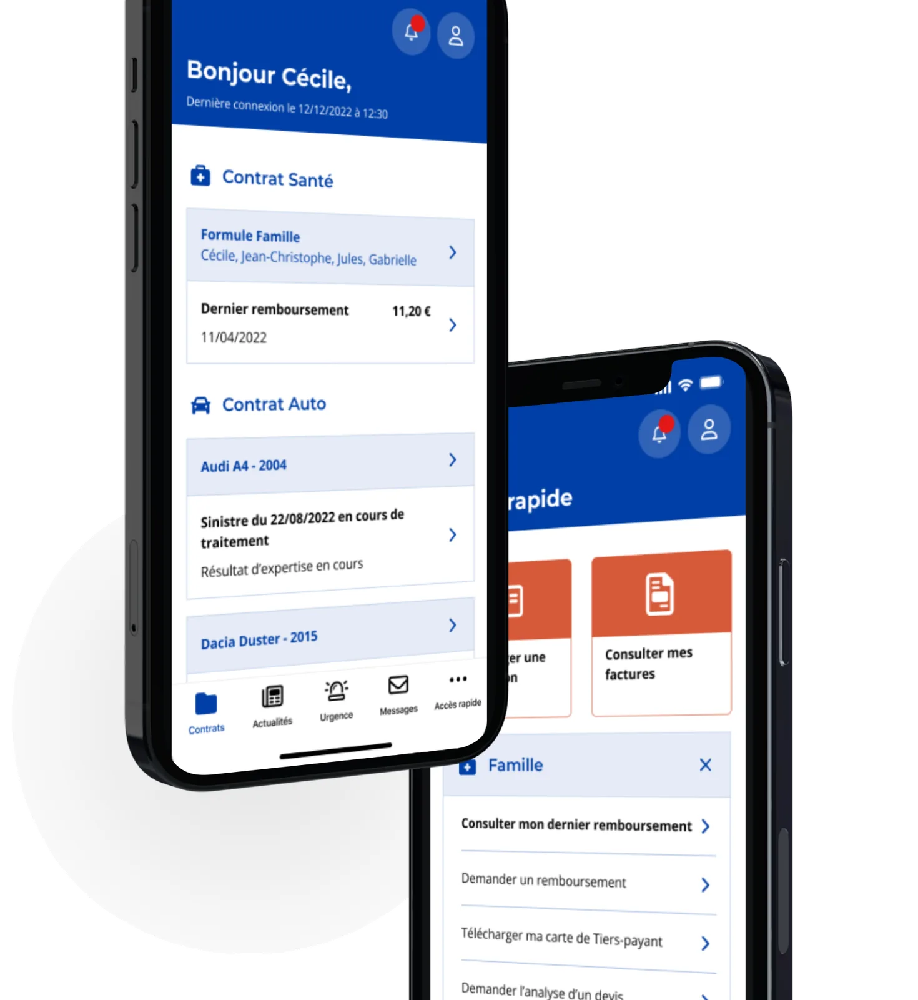
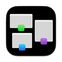
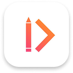
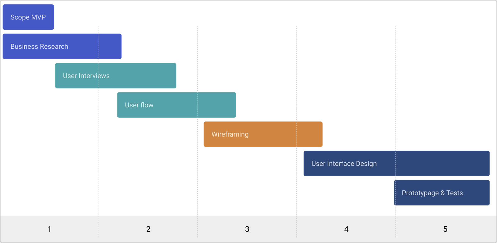
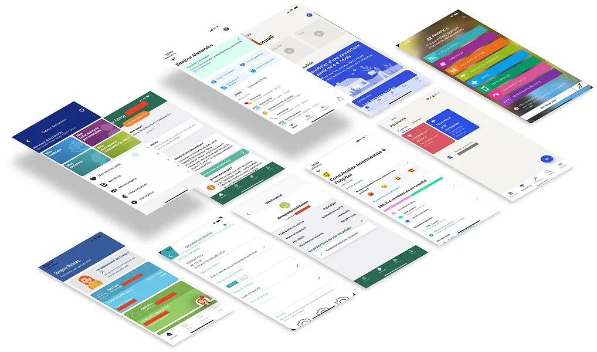
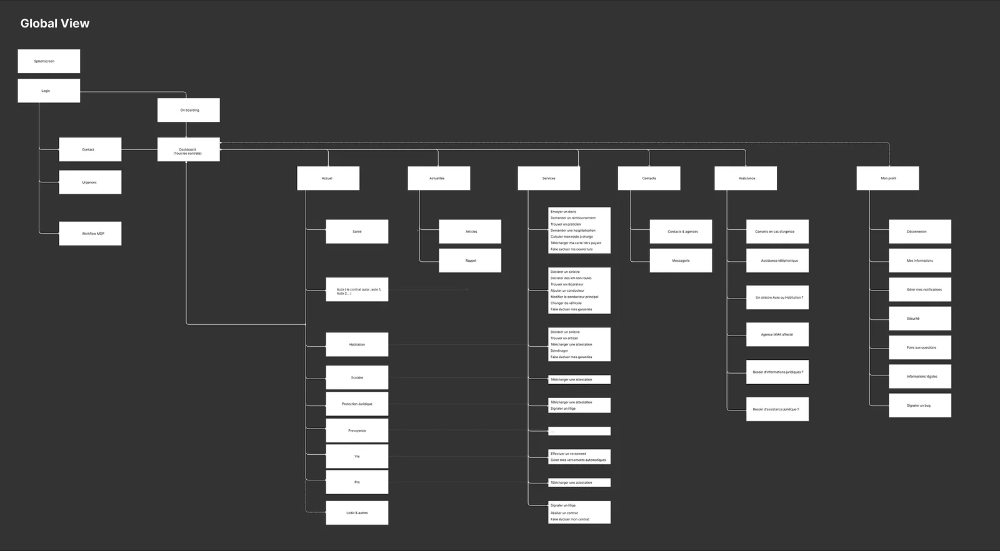
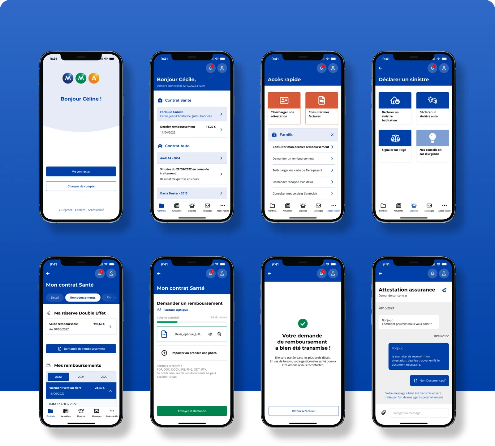
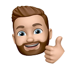

Making insurance easier to make life easier
Reimbursements, claims, relationships with agents. Discover the entire design process that made life even simpler for MMA policyholders.

The mission
As a Senior Product Designer, I led the creation of the very first mobile app for MMA, a major insurance player in France, and faced an exciting and complex challenge. Our goal was to create a product with an exceptional user experience from scratch, working closely with the internal product, marketing and development teams. One of the main priorities was to design an app that would meet the diverse needs of MMA users and customers across a wide range of areas, including health, home, car, legal protection, hunting, school insurance, life accidents and multi-risk coverage. To achieve this, we had to tackle several key challenges:
Needs understanding & research
Research and create features tailored to users' specific needs in each insurance area.
Intuitive, cross-product navigation
Navigate simply across such a wide range of insurance services. Organize information logically and as simply as possible.
Experience personalization
Integrate personalization and configuration features based on user preferences. E.g. authentication, notifications, etc.
Security and confidentiality
An absolute priority: implement robust security measures to ensure users' sensitive information was optimally protected.
Accessibility
Create an interface accessible to people with disabilities and easy to use for everyone, whatever their level of tech proficiency.
Testing
Run frequent user tests throughout the development process to gather valuable feedback and adjust accordingly.
My role
I led the product design of the mobile app. During this project I had the opportunity to work with the internal teams: Christophe Houze, Head of Digital UX Organization, Virginie Mahé, Digital Project Manager, Rémi Joyaux, Product Manager, Maxime Gourloo, Proximity Product Owner, Lucie Chevrier, UX Designer, and Dorian Macerot, Organization Assistant. I carried out this mission in collaboration with Chris Le Guen, Project Manager at the Team Inside agency, with the support of Riham Dir Akilian, Product Designer at Monsieur Guiz.
Main tasks
- Interview and Scope
- Research and ideation
- Design execution and validation
- Design system creation, integration and handover
Design & Research Toolkit
 Miro
Miro Figma
Figma Interview
Interview
Card sortingSurvey
ZeroHeightPlanning
The project unfolded in 5 main phases: scope definition for the MVP, business research & user interviews, userflow & wireframing, final interface and design system creation, prototyping and user testing.

Research deck
Competition
Together with the MMA team, we benchmarked major competitors among other insurance apps with a similar product. We looked at how they present information and organize their home screen.
Among them: established brands such as GMF, Groupama and Pacifica, but also specialized pure players such as Alan and Luko.

Interviews
To better understand our users' expectations, we ran focus groups and individual interviews. This was a fundamental step in the design process of the insurance mobile app. It allowed us to discover what really matters to our users, to solve potential problems before launch and to craft an exceptional user experience. For confidentiality reasons the interviews cannot be shared, but here are the main insights that emerged during this phase.
Personalized dashboard
Offer a personalized, evolving dashboard: latest reimbursements, claim tracking, access to assistance, seasonal news pushes.
Quick actions
Quick access to recurring actions depending on contract types: request a reimbursement, report a claim, contact my agent, issue a certificate.
The solution
User flow
After in-depth reflection and several card-sorting workshops, we started mapping the user journeys. Our goal was to refine the navigation and structure the information architecture so as to maintain a consistent pattern, ensuring easy understanding for all our users.

Wireframe
During the wireframing phase, we materialized the navigation and information architecture concepts, which provided a solid foundation for designing the final interfaces. In parallel, we also worked on various features addressing our users' expectations and pain points. By bringing all these elements together, we carefully designed the patterns and layout of key interactions such as buttons, navigation menus and content areas.
The collaborative approach played a central role in the success of this phase. It gave us the opportunity to gather valuable ideas and feedback from all stakeholders, which greatly enriched our understanding of user needs.

User interface
Once our concepts were validated, I worked on the final UI of the interfaces. Creating a design system was essential to the success of such a project. It enabled us to craft a carefully thought-out user interface, perfectly adapted to every device.

Prototype
Find the prototype on Figma. For confidentiality reasons the prototype is not accessible at the moment.
The impact
As the app is still in development, I am not able to share more information about the impact of our work. The data will be updated soon.
Acknowledgements
Thanks to the whole MMA team

Rémi Joyaux